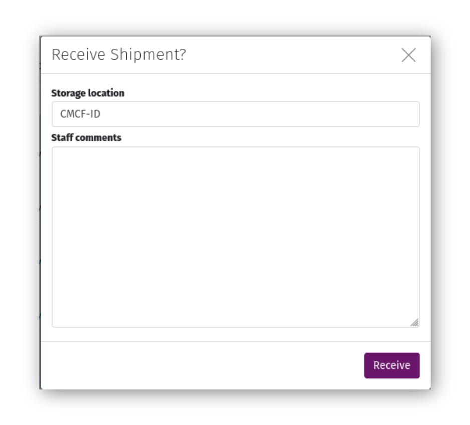
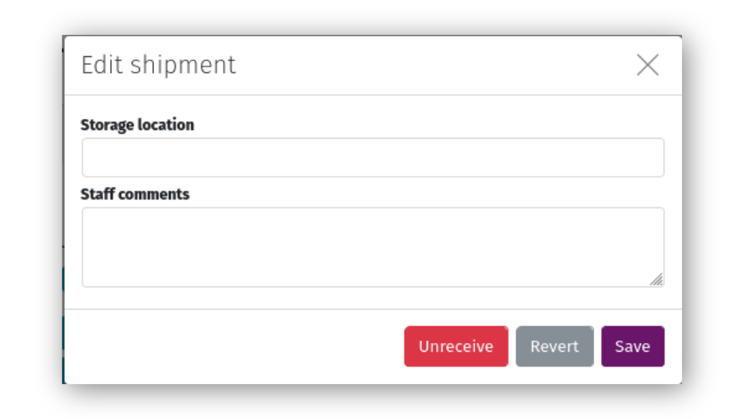
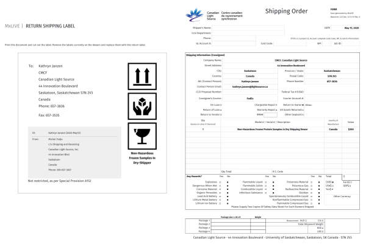

Managing Shipments¶
Receive a Shipment¶
Once a user sends their shipment, it will be visible on your staff dashboard. When the shipment arrives on-site physically, and has been received at the beamline, click the “Receive” icon and submit the form to mark it “On-site”. If you notice anything unusual about the shipment, you can leave comments in the form that will be visible to both staff and the user.
Click the “Comments” icon on the shipment page toolbar to add or edit comments about the shipment. These comments are visible to both staff and the user.
Note
If you marked a shipment “On-site” in error, or if the user needs to edit some information in the shipment (assuming no data has already been collected and associated with samples in the shipment), open the comments form and select “Unreceive”. This will change the shipment’s status to “Sent”, and will allow the user to Recall their shipment, edit it, and Send it again.
Return a Shipment¶
After a user’s beamtime is complete and they are finished with their samples, print labels using the “Labels” icon in the toolbar. Return labels include a label to affix to the outside of the transport container(s), and a shipping form to be used by the facility Shipping & Receiving department. This form is customized for CLS Approved Document 0.11.1.19 Rev.6.
Click “Return” and complete the form to mark the shipment as returned. Returned shipments will not appear on the staff dashboard, but are still available through detailed lists.
Creating an On-site Shipment¶
For effective shipment management, on-site shipments should be as closely represented in MxLIVE as possible. On rare occasions where a user is unable to create an MxLIVE shipment for their samples, or for testing purposes, staff can create an on-site shipment assigned to a user’s account. Click on the “Start Now” icon at the bottom of the list of shipments on the staff dashboard and complete the three-stepped form:
Step 1: Choose the project that owns the sample.
Step 2: Enter the names visible on the outside of the containers in the shipment.
Step 3: Use the “Fill Containers” button to create groups and samples for the shipment. Since the shipment will automatically be “On-site”, there will be no opportunity to add samples to the shipment after it is created.